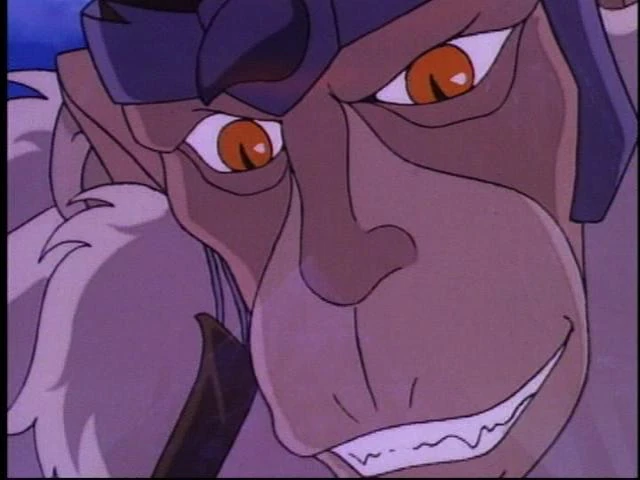

Lion-O
Líder de los ThunderCats. Aunque joven e inexperto, posee la Espada del Augurio y debe crecer rápidamente para liderar a su equipo con valentía.
"ThunderCats" es una serie animada que combina acción, ciencia ficción y fantasía. Sigue las aventuras de un grupo de felinos humanoides que escapan de su planeta natal destruido y deben enfrentar nuevos desafíos en un mundo desconocido mientras luchan contra el malvado Mumm-Ra. La serie explora temas como el liderazgo, la madurez y el trabajo en equipo.
Actualmente puede verse en HBO Max y también hay episodios disponibles en YouTube. La serie original se emitió por primera vez en los años 80, y ha tenido varias versiones modernas desde entonces.
Líder de los ThunderCats. Aunque joven e inexperto, posee la Espada del Augurio y debe crecer rápidamente para liderar a su equipo con valentía.
Guerrera veloz y ágil con un sexto sentido. Es leal a Lion-O y una pieza fundamental del equipo por su rapidez y habilidades intuitivas.
Arquitecto y científico del grupo. Su madurez y razonamiento lo convierten en la voz de la lógica y el equilibrio dentro del equipo.
El más fuerte del grupo. Además de ser un gran luchador, es el mecánico y constructor de los vehículos ThunderCats. Muy protector con los suyos.

El villano principal. Es un hechicero momificado que busca apoderarse de la Espada del Augurio y el Ojo de Thundera. Representa el mal eterno.
Compañero fiel de Lion-O. Aunque es algo cómico, actúa como una figura protectora y cariñosa, casi como una niñera o figura parental.
Antiguo líder de los ThunderCats, ahora actúa como guía espiritual de Lion-O. Su sabiduría es clave en momentos difíciles.
Hermanos gemelos jóvenes del equipo. Son traviesos, ingeniosos y constantemente se meten en problemas, aunque también ayudan en batallas.
Criatura con apariencia de mandril, uno de los secuaces de Mumm-Ra. Ayuda en sus planes malignos con fuerza bruta y ferocidad.
Líder de los Mutantes, una raza de lagartos al servicio de Mumm-Ra. Representa la fuerza militar enemiga contra los ThunderCats.
Le doy un 8/10. Es una muy buena serie para quienes disfrutan de superhéroes, batallas épicas y aventuras. Si ya estás acostumbrado al género, "ThunderCats" te va a atrapar rápidamente.